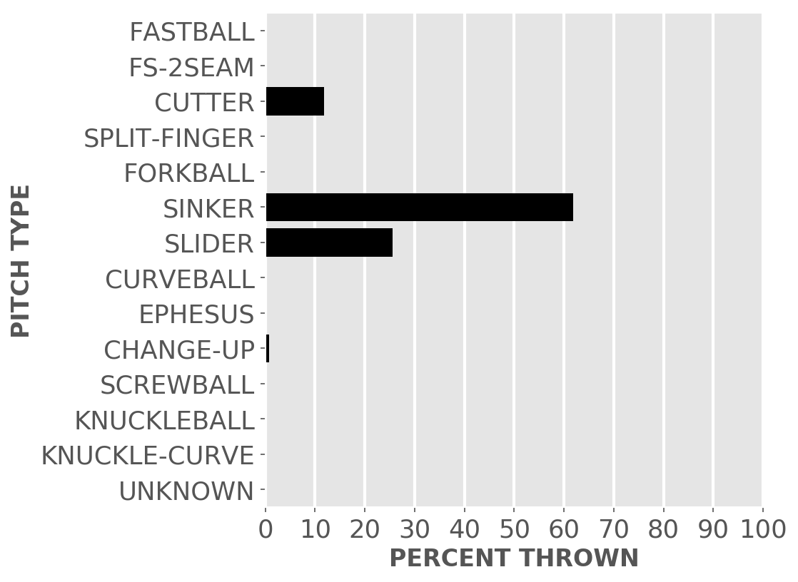

Chicago baseball
White Sox
A little-more-than-casual but not-very-wonky statistical look at the current season
Plenty of seats available to watch the kids learn how to play in the big league.
Updated Sunday, April 29, at 8:49 a.m. Pybaseball gathers these from Baseball-reference.com.
Games
JUMP TO TOP | BATTERS | PITCHERS
On Friday, Apr 27, the Sox won a night game at the Royals, 7 to 4, in 11 innings. The winning pitcher was Infante, losing pitcher was Hill. Save: Soria. Next scheduled game: Saturday, Apr 28, a night game at the Royals.
Summary results by team
| Team | Wins | Loses | Avg. Sox runs | Avg. runs against |
|---|---|---|---|---|
| Astros | 0 | 3 | 0.67 | 9.0 |
| Athletics | 0 | 3 | 4.67 | 10.0 |
| Blue Jays | 1 | 2 | 3.67 | 7.0 |
| Mariners | 1 | 2 | 4.33 | 3.0 |
| Rays | 1 | 2 | 3.67 | 4.0 |
| Royals | 4 | 0 | 7.75 | 4.25 |
| Tigers | 0 | 3 | 2.67 | 5.33 |
| Twins | 0 | 1 | 0.0 | 4.0 |
Batters
JUMP TO TOP | GAMES | PITCHERS
Click the link under a player's name to get up-to-speed on a player at bat.
Jose Abreu #79, 1B
| Status (A = active) | A |
| Bats/Throws | R/R |
| At bats | 96 |
| Hits | 26 |
| Home runs | 6 |
| Batting Avg. | 0.271 |

| Runs | 12 |
| RBI | 12 |
| On-base percent | 0.34 |
| Weighted OBP | 0.365 |
| Slugging % | 0.5 |
| Stolen bases | 0 |
| Caught stealing | 0 |
Other measures
| Weighted runs above avg. | 4.3 |
| Runs Above Replacement | 3.9 |
| Fielding % | -0.5 |
| WAR | 0.4 |
Tim Anderson #7, SS
| Status (A = active) | A |
| Bats/Throws | R/R |
| At bats | 97 |
| Hits | 27 |
| Home runs | 4 |
| Batting Avg. | 0.278 |

| Runs | 11 |
| RBI | 7 |
| On-base percent | 0.327 |
| Weighted OBP | 0.34 |
| Slugging % | 0.454 |
| Stolen bases | 8 |
| Caught stealing | 1 |
Other measures
| Weighted runs above avg. | 2.1 |
| Runs Above Replacement | 7.3 |
| Fielding % | -0.7 |
| WAR | 0.8 |
Welington Castillo #21, C
| Status (A = active) | A |
| Bats/Throws | R/R |
| At bats | 64 |
| Hits | 15 |
| Home runs | 3 |
| Batting Avg. | 0.234 |

| Runs | 8 |
| RBI | 6 |
| On-base percent | 0.3 |
| Weighted OBP | 0.317 |
| Slugging % | 0.422 |
| Stolen bases | 0 |
| Caught stealing | 0 |
Other measures
| Weighted runs above avg. | 0.1 |
| Runs Above Replacement | 1.4 |
| Fielding % | -1.0 |
| WAR | 0.1 |
Matt Davidson #24, DH
| Status (A = active) | A |
| Bats/Throws | R/R |
| At bats | 84 |
| Hits | 21 |
| Home runs | 9 |
| Batting Avg. | 0.25 |

| Runs | 16 |
| RBI | 18 |
| On-base percent | 0.364 |
| Weighted OBP | 0.416 |
| Slugging % | 0.619 |
| Stolen bases | 0 |
| Caught stealing | 0 |
Other measures
| Weighted runs above avg. | 8.0 |
| Runs Above Replacement | 8.1 |
| Fielding % | |
| WAR | 0.8 |
Adam Engel #15, CF
| Status (A = active) | A |
| Bats/Throws | R/R |
| At bats | 63 |
| Hits | 10 |
| Home runs | 0 |
| Batting Avg. | 0.159 |

| Runs | 1 |
| RBI | 7 |
| On-base percent | 0.229 |
| Weighted OBP | 0.202 |
| Slugging % | 0.206 |
| Stolen bases | 3 |
| Caught stealing | 1 |
Other measures
| Weighted runs above avg. | -6.4 |
| Runs Above Replacement | -5.9 |
| Fielding % | -2.0 |
| WAR | -0.6 |
Avisail Garcia #26, RF
| Status (A = active) | D10 |
| Bats/Throws | R/R |
| At bats | 73 |
| Hits | 17 |
| Home runs | 1 |
| Batting Avg. | 0.233 |

| Runs | 5 |
| RBI | 4 |
| On-base percent | 0.25 |
| Weighted OBP | 0.248 |
| Slugging % | 0.315 |
| Stolen bases | 0 |
| Caught stealing | 1 |
Other measures
| Weighted runs above avg. | -4.1 |
| Runs Above Replacement | -5.1 |
| Fielding % | -1.3 |
| WAR | -0.5 |
Leury Garcia #28, CF
| Status (A = active) | A |
| Bats/Throws | S/R |
| At bats | 53 |
| Hits | 13 |
| Home runs | 0 |
| Batting Avg. | 0.245 |

| Runs | 7 |
| RBI | 6 |
| On-base percent | 0.31 |
| Weighted OBP | 0.279 |
| Slugging % | 0.302 |
| Stolen bases | 5 |
| Caught stealing | 0 |
Other measures
| Weighted runs above avg. | -1.7 |
| Runs Above Replacement | 1.5 |
| Fielding % | 0.9 |
| WAR | 0.2 |
Yoan Moncada #10, 2B
| Status (A = active) | A |
| Bats/Throws | S/R |
| At bats | 100 |
| Hits | 26 |
| Home runs | 6 |
| Batting Avg. | 0.26 |

| Runs | 17 |
| RBI | 13 |
| On-base percent | 0.351 |
| Weighted OBP | 0.379 |
| Slugging % | 0.53 |
| Stolen bases | 4 |
| Caught stealing | 0 |
Other measures
| Weighted runs above avg. | 5.9 |
| Runs Above Replacement | 12.9 |
| Fielding % | 1.1 |
| WAR | 1.3 |
Omar Narvaez #38, C
| Status (A = active) | A |
| Bats/Throws | L/R |
| At bats | 33 |
| Hits | 6 |
| Home runs | 0 |
| Batting Avg. | 0.182 |

| Runs | 1 |
| RBI | 1 |
| On-base percent | 0.289 |
| Weighted OBP | 0.251 |
| Slugging % | 0.242 |
| Stolen bases | 0 |
| Caught stealing | 2 |
Other measures
| Weighted runs above avg. | -1.9 |
| Runs Above Replacement | 0.0 |
| Fielding % | 1.0 |
| WAR | 0.0 |
Daniel Palka #18, OF
| Status (A = active) | A |
| Bats/Throws | L/L |
| At bats | 13 |
| Hits | 4 |
| Home runs | 1 |
| Batting Avg. | 0.308 |

| Runs | 3 |
| RBI | 4 |
| On-base percent | 0.308 |
| Weighted OBP | 0.392 |
| Slugging % | 0.615 |
| Stolen bases | 0 |
| Caught stealing | 0 |
Other measures
| Weighted runs above avg. | 0.8 |
| Runs Above Replacement | 0.9 |
| Fielding % | |
| WAR | 0.1 |
Yolmer Sanchez #5, 2B
| Status (A = active) | A |
| Bats/Throws | S/R |
| At bats | 91 |
| Hits | 25 |
| Home runs | 1 |
| Batting Avg. | 0.275 |

| Runs | 8 |
| RBI | 14 |
| On-base percent | 0.32 |
| Weighted OBP | 0.316 |
| Slugging % | 0.407 |
| Stolen bases | 3 |
| Caught stealing | 0 |
Other measures
| Weighted runs above avg. | 0.1 |
| Runs Above Replacement | 4.6 |
| Fielding % | 1.5 |
| WAR | 0.5 |
Trayce Thompson #32, CF
| Status (A = active) | A |
| Bats/Throws | R/R |
| At bats | 34 |
| Hits | 5 |
| Home runs | 2 |
| Batting Avg. | 0.147 |

| Runs | 5 |
| RBI | 2 |
| On-base percent | 0.147 |
| Weighted OBP | 0.211 |
| Slugging % | 0.353 |
| Stolen bases | 0 |
| Caught stealing | 0 |
Other measures
| Weighted runs above avg. | -2.9 |
| Runs Above Replacement | -1.3 |
| Fielding % | 0.7 |
| WAR | -0.1 |
Pitchers
Click the link under a player's name to get acquainted with who's on the mound. Click here for a description of these stats and more.
Luis Avilan #70, P
| Status (A = active) | A |
| Bats/Throws | L/L |
| Wins | 0 |
| Losses | 0 |
| ERA | 4.5 |
| Caught stealing | 0 |
| Complete games | 0 |
| Shutouts | 0 |
| Saves | 0 |
| Blown saves | 1 |
Pitch types

Fastball = Four Seam and Unclassified Fastballs; FS-2seam = Two Seam Fastballs; Ephesuses are a really slow ball
| Average innings pitched | 0.7 |
| Strikeouts per 9 innings | 10.13 |
| Walks per 9 innings | 5.63 |
| Walks, hits per inning (WHIP) | 1.75 |
| Percent strikeouts | 23.1 |
| Percent walks | 12.8 |
| Percent left on base | 55.6 |
| Percent first pitch strike | 56.4 |
Other measures
| Avg. run support | 1.0 |
| Opponents batting average | 0.265 |
| Batting avg. on balls in play | 0.333 |
| Fielding independent pitching | 4.43 |
| Win probability added (WPA) | -0.4 |
| Runs above replacement | 0.1 |
| WAR | 0.0 |
Chris Beck #54, P
| Status (A = active) | A |
| Bats/Throws | R/R |
| Wins | 0 |
| Losses | 0 |
| ERA | 3.6 |
| Caught stealing | 0 |
| Complete games | 0 |
| Shutouts | 0 |
| Saves | 1 |
| Blown saves | 0 |
Pitch types

Fastball = Four Seam and Unclassified Fastballs; FS-2seam = Two Seam Fastballs; Ephesuses are a really slow ball
| Average innings pitched | 2.5 |
| Strikeouts per 9 innings | 5.4 |
| Walks per 9 innings | 0.0 |
| Walks, hits per inning (WHIP) | 1.6 |
| Percent strikeouts | 14.3 |
| Percent walks | 0.0 |
| Percent left on base | 90.9 |
| Percent first pitch strike | 52.4 |
Other measures
| Avg. run support | 0.0 |
| Opponents batting average | 0.381 |
| Batting avg. on balls in play | 0.412 |
| Fielding independent pitching | 4.58 |
| Win probability added (WPA) | 0.01 |
| Runs above replacement | 0.1 |
| WAR | 0.0 |
Aaron Bummer #39, P
| Status (A = active) | A |
| Bats/Throws | L/L |
| Wins | 0 |
| Losses | 1 |
| ERA | 6.14 |
| Caught stealing | 0 |
| Complete games | 0 |
| Shutouts | 0 |
| Saves | 0 |
| Blown saves | 1 |
Pitch types
Fastball = Four Seam and Unclassified Fastballs; FS-2seam = Two Seam Fastballs; Ephesuses are a really slow ball
| Average innings pitched | 0.5 |
| Strikeouts per 9 innings | 11.05 |
| Walks per 9 innings | 2.45 |
| Walks, hits per inning (WHIP) | 1.77 |
| Percent strikeouts | 25.0 |
| Percent walks | 5.6 |
| Percent left on base | 61.5 |
| Percent first pitch strike | 41.7 |
Other measures
| Avg. run support | 5.0 |
| Opponents batting average | 0.324 |
| Batting avg. on balls in play | 0.44 |
| Fielding independent pitching | 1.55 |
| Win probability added (WPA) | -0.64 |
| Runs above replacement | 2.7 |
| WAR | 0.3 |
Carson Fulmer #51, P
| Status (A = active) | A |
| Bats/Throws | R/R |
| Wins | 2 |
| Losses | 1 |
| ERA | 4.32 |
| Caught stealing | 5 |
| Complete games | 0 |
| Shutouts | 0 |
| Saves | 0 |
| Blown saves | 0 |
Pitch types

Fastball = Four Seam and Unclassified Fastballs; FS-2seam = Two Seam Fastballs; Ephesuses are a really slow ball
| Average innings pitched | 4.2 |
| Strikeouts per 9 innings | 6.48 |
| Walks per 9 innings | 4.68 |
| Walks, hits per inning (WHIP) | 1.48 |
| Percent strikeouts | 15.8 |
| Percent walks | 11.4 |
| Percent left on base | 71.8 |
| Percent first pitch strike | 50.9 |
Other measures
| Avg. run support | 27.0 |
| Opponents batting average | 0.242 |
| Batting avg. on balls in play | 0.269 |
| Fielding independent pitching | 5.1 |
| Win probability added (WPA) | -0.16 |
| Runs above replacement | 1.1 |
| WAR | 0.1 |
Lucas Giolito #27, P
| Status (A = active) | A |
| Bats/Throws | R/R |
| Wins | 1 |
| Losses | 3 |
| ERA | 7.71 |
| Caught stealing | 5 |
| Complete games | 0 |
| Shutouts | 0 |
| Saves | 0 |
| Blown saves | 0 |
Pitch types

Fastball = Four Seam and Unclassified Fastballs; FS-2seam = Two Seam Fastballs; Ephesuses are a really slow ball
| Average innings pitched | 5.0 |
| Strikeouts per 9 innings | 3.86 |
| Walks per 9 innings | 7.36 |
| Walks, hits per inning (WHIP) | 1.71 |
| Percent strikeouts | 8.9 |
| Percent walks | 17.1 |
| Percent left on base | 55.3 |
| Percent first pitch strike | 45.5 |
Other measures
| Avg. run support | 7.0 |
| Opponents batting average | 0.235 |
| Batting avg. on balls in play | 0.247 |
| Fielding independent pitching | 6.26 |
| Win probability added (WPA) | -0.56 |
| Runs above replacement | -0.8 |
| WAR | -0.1 |
Miguel Gonzalez #58, P
| Status (A = active) | D10 |
| Bats/Throws | R/R |
| Wins | 0 |
| Losses | 3 |
| ERA | 12.41 |
| Caught stealing | 3 |
| Complete games | 0 |
| Shutouts | 0 |
| Saves | 0 |
| Blown saves | 0 |
Pitch types

Fastball = Four Seam and Unclassified Fastballs; FS-2seam = Two Seam Fastballs; Ephesuses are a really slow ball
| Average innings pitched | 4.0 |
| Strikeouts per 9 innings | 3.65 |
| Walks per 9 innings | 4.38 |
| Walks, hits per inning (WHIP) | 2.43 |
| Percent strikeouts | 7.6 |
| Percent walks | 9.1 |
| Percent left on base | 49.2 |
| Percent first pitch strike | 57.6 |
Other measures
| Avg. run support | 5.0 |
| Opponents batting average | 0.4 |
| Batting avg. on balls in play | 0.392 |
| Fielding independent pitching | 8.05 |
| Win probability added (WPA) | -0.94 |
| Runs above replacement | -3.6 |
| WAR | -0.3 |
Nate Jones #65, P
| Status (A = active) | A |
| Bats/Throws | R/R |
| Wins | 1 |
| Losses | 0 |
| ERA | 1.64 |
| Caught stealing | 0 |
| Complete games | 0 |
| Shutouts | 0 |
| Saves | 1 |
| Blown saves | 1 |
Pitch types

Fastball = Four Seam and Unclassified Fastballs; FS-2seam = Two Seam Fastballs; Ephesuses are a really slow ball
| Average innings pitched | 1.1 |
| Strikeouts per 9 innings | 11.45 |
| Walks per 9 innings | 3.27 |
| Walks, hits per inning (WHIP) | 1.18 |
| Percent strikeouts | 29.2 |
| Percent walks | 8.3 |
| Percent left on base | 85.7 |
| Percent first pitch strike | 66.7 |
Other measures
| Avg. run support | 2.0 |
| Opponents batting average | 0.209 |
| Batting avg. on balls in play | 0.31 |
| Fielding independent pitching | 2.0 |
| Win probability added (WPA) | 0.57 |
| Runs above replacement | 3.7 |
| WAR | 0.4 |
Reynaldo Lopez #40, P
| Status (A = active) | A |
| Bats/Throws | R/R |
| Wins | 0 |
| Losses | 2 |
| ERA | 1.78 |
| Caught stealing | 5 |
| Complete games | 0 |
| Shutouts | 0 |
| Saves | 0 |
| Blown saves | 0 |
Pitch types

Fastball = Four Seam and Unclassified Fastballs; FS-2seam = Two Seam Fastballs; Ephesuses are a really slow ball
| Average innings pitched | 6.0 |
| Strikeouts per 9 innings | 7.42 |
| Walks per 9 innings | 4.45 |
| Walks, hits per inning (WHIP) | 1.22 |
| Percent strikeouts | 19.7 |
| Percent walks | 11.8 |
| Percent left on base | 86.2 |
| Percent first pitch strike | 63.8 |
Other measures
| Avg. run support | 7.0 |
| Opponents batting average | 0.2 |
| Batting avg. on balls in play | 0.232 |
| Fielding independent pitching | 4.5 |
| Win probability added (WPA) | 0.71 |
| Runs above replacement | 3.5 |
| WAR | 0.3 |
Juan Minaya #37, P
| Status (A = active) | A |
| Bats/Throws | R/R |
| Wins | 0 |
| Losses | 0 |
| ERA | 12.0 |
| Caught stealing | 0 |
| Complete games | 0 |
| Shutouts | 0 |
| Saves | 0 |
| Blown saves | 0 |
Pitch types

Fastball = Four Seam and Unclassified Fastballs; FS-2seam = Two Seam Fastballs; Ephesuses are a really slow ball
| Average innings pitched | 0.8 |
| Strikeouts per 9 innings | 15.0 |
| Walks per 9 innings | 27.0 |
| Walks, hits per inning (WHIP) | 4.0 |
| Percent strikeouts | 23.8 |
| Percent walks | 42.9 |
| Percent left on base | 66.7 |
| Percent first pitch strike | 33.3 |
Other measures
| Avg. run support | 1.0 |
| Opponents batting average | 0.25 |
| Batting avg. on balls in play | 0.429 |
| Fielding independent pitching | 8.85 |
| Win probability added (WPA) | -0.03 |
| Runs above replacement | -0.6 |
| WAR | -0.1 |
Bruce Rondon #44, P
| Status (A = active) | A |
| Bats/Throws | R/R |
| Wins | 1 |
| Losses | 0 |
| ERA | 6.23 |
| Caught stealing | 0 |
| Complete games | 0 |
| Shutouts | 0 |
| Saves | 0 |
| Blown saves | 0 |
Pitch types

Fastball = Four Seam and Unclassified Fastballs; FS-2seam = Two Seam Fastballs; Ephesuses are a really slow ball
| Average innings pitched | 1.2 |
| Strikeouts per 9 innings | 13.5 |
| Walks per 9 innings | 6.23 |
| Walks, hits per inning (WHIP) | 1.38 |
| Percent strikeouts | 35.1 |
| Percent walks | 16.2 |
| Percent left on base | 50.0 |
| Percent first pitch strike | 56.8 |
Other measures
| Avg. run support | 4.0 |
| Opponents batting average | 0.194 |
| Batting avg. on balls in play | 0.333 |
| Fielding independent pitching | 2.26 |
| Win probability added (WPA) | 0.33 |
| Runs above replacement | 2.1 |
| WAR | 0.2 |
Hector Santiago #53, P
| Status (A = active) | A |
| Bats/Throws | R/L |
| Wins | 0 |
| Losses | 0 |
| ERA | 3.38 |
| Caught stealing | 0 |
| Complete games | 0 |
| Shutouts | 0 |
| Saves | 0 |
| Blown saves | 0 |
Pitch types

Fastball = Four Seam and Unclassified Fastballs; FS-2seam = Two Seam Fastballs; Ephesuses are a really slow ball
| Average innings pitched | 2.3 |
| Strikeouts per 9 innings | 8.44 |
| Walks per 9 innings | 3.94 |
| Walks, hits per inning (WHIP) | 1.31 |
| Percent strikeouts | 21.7 |
| Percent walks | 10.1 |
| Percent left on base | 84.2 |
| Percent first pitch strike | 55.1 |
Other measures
| Avg. run support | 6.0 |
| Opponents batting average | 0.233 |
| Batting avg. on balls in play | 0.279 |
| Fielding independent pitching | 4.62 |
| Win probability added (WPA) | 0.23 |
| Runs above replacement | -0.1 |
| WAR | 0.0 |
James Shields #33, P
| Status (A = active) | A |
| Bats/Throws | R/R |
| Wins | 1 |
| Losses | 3 |
| ERA | 6.14 |
| Caught stealing | 5 |
| Complete games | 0 |
| Shutouts | 0 |
| Saves | 0 |
| Blown saves | 0 |
Pitch types

Fastball = Four Seam and Unclassified Fastballs; FS-2seam = Two Seam Fastballs; Ephesuses are a really slow ball
| Average innings pitched | 4.9 |
| Strikeouts per 9 innings | 4.6 |
| Walks per 9 innings | 5.22 |
| Walks, hits per inning (WHIP) | 1.7 |
| Percent strikeouts | 11.0 |
| Percent walks | 12.4 |
| Percent left on base | 64.3 |
| Percent first pitch strike | 57.7 |
Other measures
| Avg. run support | 20.0 |
| Opponents batting average | 0.277 |
| Batting avg. on balls in play | 0.304 |
| Fielding independent pitching | 4.89 |
| Win probability added (WPA) | -0.68 |
| Runs above replacement | 1.5 |
| WAR | 0.2 |
Joakim Soria #48, P
| Status (A = active) | A |
| Bats/Throws | R/R |
| Wins | 0 |
| Losses | 0 |
| ERA | 2.7 |
| Caught stealing | 0 |
| Complete games | 0 |
| Shutouts | 0 |
| Saves | 4 |
| Blown saves | 1 |
Pitch types

Fastball = Four Seam and Unclassified Fastballs; FS-2seam = Two Seam Fastballs; Ephesuses are a really slow ball
| Average innings pitched | 1.0 |
| Strikeouts per 9 innings | 9.0 |
| Walks per 9 innings | 1.8 |
| Walks, hits per inning (WHIP) | 1.2 |
| Percent strikeouts | 23.3 |
| Percent walks | 4.7 |
| Percent left on base | 84.9 |
| Percent first pitch strike | 41.9 |
Other measures
| Avg. run support | 0.0 |
| Opponents batting average | 0.244 |
| Batting avg. on balls in play | 0.3 |
| Fielding independent pitching | 3.08 |
| Win probability added (WPA) | 0.41 |
| Runs above replacement | 2.6 |
| WAR | 0.3 |
Chris Volstad #66, P
| Status (A = active) | A |
| Bats/Throws | R/R |
| Wins | 0 |
| Losses | 1 |
| ERA | 3.75 |
| Caught stealing | 1 |
| Complete games | 0 |
| Shutouts | 0 |
| Saves | 0 |
| Blown saves | 0 |
Pitch types

Fastball = Four Seam and Unclassified Fastballs; FS-2seam = Two Seam Fastballs; Ephesuses are a really slow ball
| Average innings pitched | 2.4 |
| Strikeouts per 9 innings | 7.5 |
| Walks per 9 innings | 2.25 |
| Walks, hits per inning (WHIP) | 1.25 |
| Percent strikeouts | 20.4 |
| Percent walks | 6.1 |
| Percent left on base | 75.3 |
| Percent first pitch strike | 65.3 |
Other measures
| Avg. run support | 2.0 |
| Opponents batting average | 0.267 |
| Batting avg. on balls in play | 0.324 |
| Fielding independent pitching | 3.6 |
| Win probability added (WPA) | 0.26 |
| Runs above replacement | 1.3 |
| WAR | 0.1 |